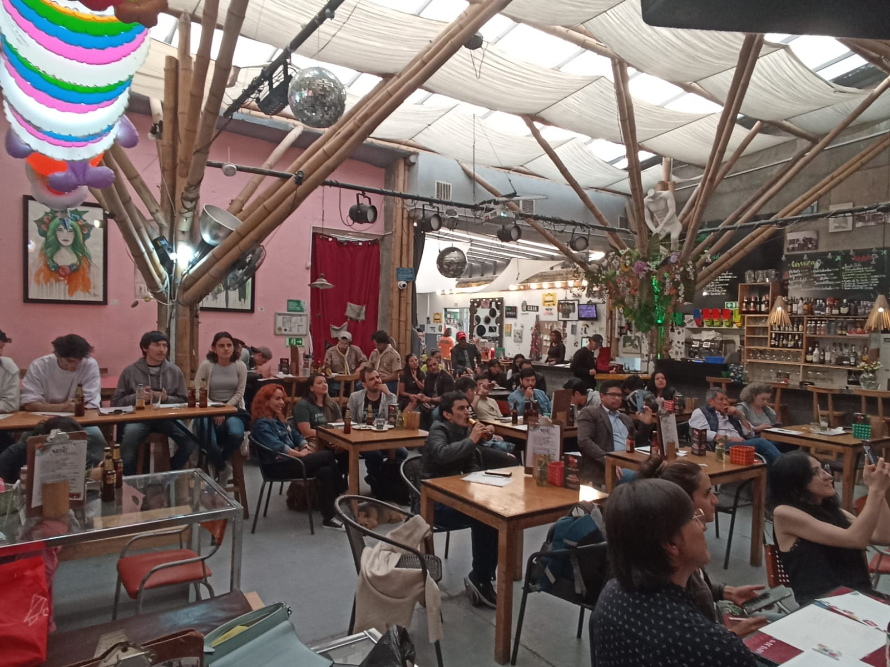
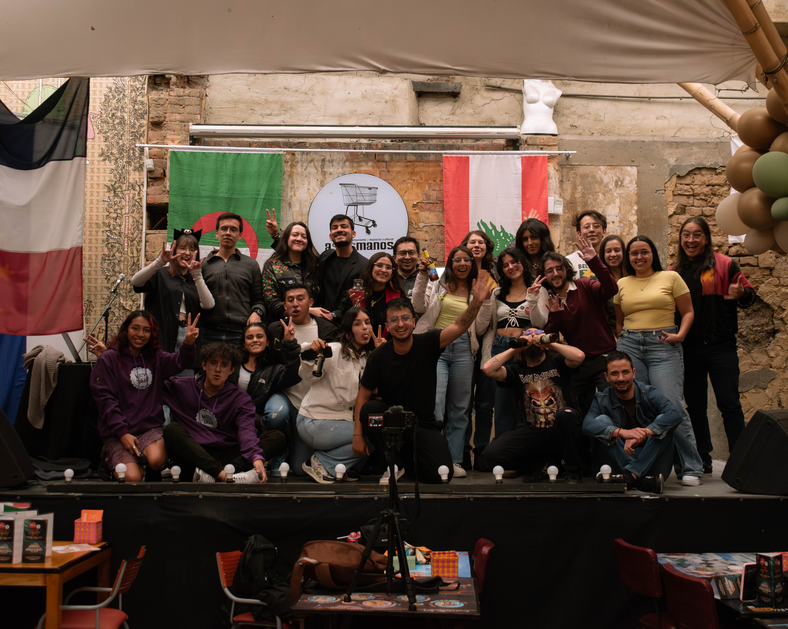

¿Qué es Math & Beer?
Una idea simple
Una comunidad enorme
Math & Beer nació de una idea tan simple como poderosa: sacar las matemáticas del aula y llevarlas a un espacio donde cualquiera pudiera disfrutarlas sin miedo ni formalismos.
Todo comenzó en la Fundación Universitaria Konrad Lorenz, cuando Carlos Díez y un grupo de estudiantes inspirados por Astronomy on Tap se preguntaron: ¿por qué no hacer lo mismo con las matemáticas?

El primer
brindis matemático
La primera edición se realizó en A Seis Manos y reunió a profesores, estudiantes y curiosos dispuestos a descubrir otro lado de la matemática.
Fue una noche de risas, reflexión y asombro: el inicio de una comunidad que entendió que los números también pueden compartirse con una cerveza en mano.

Un encuentro que sigue creciendo
Desde 2022, Math & Beer se ha consolidado como un encuentro mensual donde las matemáticas se mezclan con la vida cotidiana, el humor y la curiosidad.
Hemos explorado temas que van desde el arte y la música hasta la inteligencia artificial y la teoría de juegos, llevando nuestras sesiones a distintas universidades del país y participando como ponentes en el Congreso Colombiano de Matemáticas.
“Cada número cuenta una historia —y cada historia comienza con un brindis.”

Un proyecto que inspira
Lo que comenzó como una idea curiosa hoy es una tradición esperada. El proyecto fue presentado en el Congreso Colombiano de Matemáticas como un modelo innovador de divulgación científica, y pronto llegará a más universidades y ciudades.
{{ n_charlas }}
Charlas
{{ charlas|length -1 }}
Años
3
Ciudades
Únete a la experiencia: trae tu bebida favorita y deja que las matemáticas te sorprendan.
Próximas charlas
¡La ciencia no se detiene! Acompañanos en nuestras siguientes sesiones para brindar y aprender sobre modelos matemáticos, datos y tecnología.
¿No quieres perderte nada?
Regístrate y te avisamos cuando haya una nueva charla.
Charlas pasadas
En cada encuentro de Math & Beer, las matemáticas se convierten en historias que despiertan la curiosidad y el asombro. Nuestras charlas son el corazón del proyecto: espacios donde las ideas fluyen entre risas, preguntas y cervezas, y donde descubrimos que detrás de cada número hay una historia que vale la pena contar. Aquí encontrarás un recorrido por todas las ediciones que hemos realizado, con temas que van desde los clásicos teoremas hasta las conexiones más inesperadas entre el arte, la tecnología, la música y la vida cotidiana.

{{ c.title }}
{{ c.speaker }}
El equipo
Detrás de Math & Beer hay un grupo de estudiantes, egresados y profesores que creemos que las ideas también se disfrutan mejor en compañía. Nos une la curiosidad, las ganas de compartir conocimiento y la convicción de que la matemática puede ser parte de una buena conversación. Cada encuentro es el resultado de trabajo en equipo, creatividad y mucha pasión por hacer que las matemáticas salgan del papel para encontrarse con la gente.
Detrás de cada charla, cada idea y cada cerveza compartida, hay un equipo que trabaja para que todo cobre sentido. Conoce al equipo que da vida a Math & Beer:
{{ m.person }}
{{ m.description }}
¿Llevarlo a tu ciudad?
Estamos buscando personas apasionadas por la divulgación, la cultura y la buena conversación. Gente curiosa, con iniciativa y con ganas de construir espacios donde las matemáticas se compartan sin miedo y con una sonrisa.
Si decides postularte, serás el corazón del proyecto en tu ciudad.
Para hacer esto realidad solo debes realizar los siguientes pasos:
- Contáctanos por redes sociales (abajo a la derecha 👇).
- Completa el formulario con tu propuesta y ultimemos detalles.
- ¡Brindemos por la ciencia en tu ciudad!